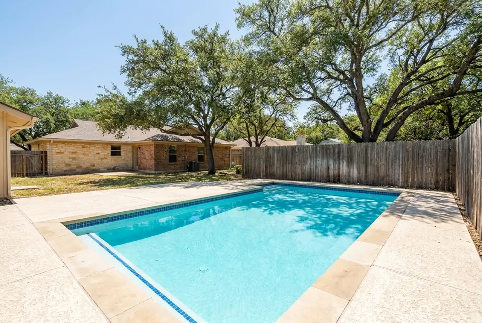
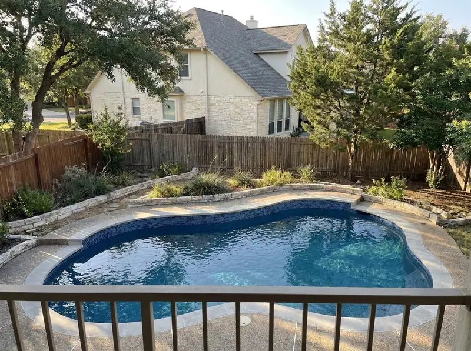
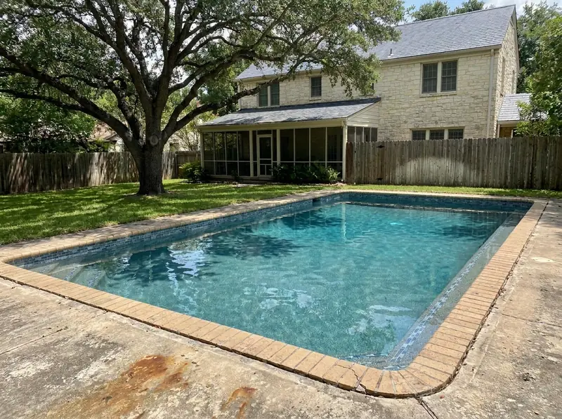

Locally owned, San Antonio-rooted, and built around one idea — do the work exactly as described, and stay through startup.
Most San Antonio homeowners dealing with a deteriorating pool have had the same experience: a contractor who gives a vague estimate over the phone, shows up late, and leaves before the startup chemistry is done correctly. We built Alamo Pool Resurfacing around a simpler idea — show up on time, quote in writing, do the work exactly as described, and stay through the startup protocol.
We're not the cheapest option in Texas. We are the option that doesn't leave you with a failed surface two years later because corners were cut on prep or chemistry.
Our Focus
Pool resurfacing and replastering for San Antonio homeowners and businesses across Bexar County, the Hill Country, and surrounding communities.
Our core services are pool resurfacing (plaster, quartz, and pebble aggregate), pool plastering and replastering, waterline tile repair and replacement, and pool deck resurfacing. We serve homeowners and businesses across San Antonio, Schertz, New Braunfels, Boerne, Helotes, Converse, Universal City, Alamo Heights, Stone Oak, Leon Valley, Cibolo, Seguin, and throughout Greater Bexar County.
What Sets Us Apart
Three things our customers tell us matter most — and they're the three things most contractors skip.
Every estimate is itemized and in writing before any work begins. If we find something unexpected during demo — a structural crack that wasn't visible, for example — we stop, show you, and get your approval before any additional work proceeds. The price we quote is the price you pay. No "we ran into something" surprises after the check clears.

The Edwards Aquifer runs alkaline and high in calcium — 200–350 mg/L calcium hardness is typical. That chemistry accelerates plaster degradation, drives calcium scale onto waterline tile, and requires a startup protocol calibrated specifically for local conditions. We've been doing this here for 18+ years. The startup chemistry we use is built around what San Antonio's water actually tests out to — not a generic national template.

When you request an estimate, we respond within 1 hour during business hours and schedule an on-site visit within a few days. We don't make you wait a week for a callback only to get a phone estimate that turns out to be meaningless. The estimate requires seeing the pool — so we come to you, look at it, and give you a number that means something.

Client Stories
Real reviews from San Antonio homeowners who trusted us with their pools.
"Our pool in Alamo Heights was in rough shape after 15 years of Texas sun. Alamo Pool Resurfacing did an incredible pebble finish and it looks absolutely stunning. Worth every penny."
"Had quotes from three companies. Alamo Pool was in the middle on price but miles ahead in communication and quality. They showed up when they said they would and delivered exactly what was promised."
"We had cracks from the limestone soil shifting under our pool. They fixed the structural issues first and then applied a beautiful marcite finish. Two years later, not a single problem."
 Alamo Pool
Alamo Pool